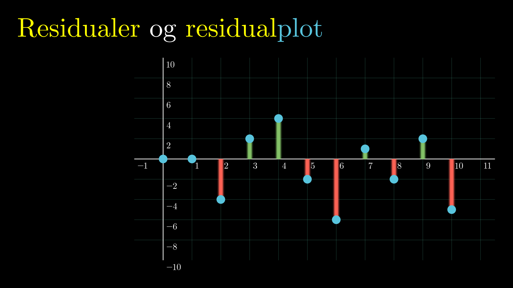

Denne side er et hobbyprojekt og udvikles løbende, når jeg har tid.
Animationer til undervisning
Animationer til undervisning
Matematik
Lineære Funktioner
Eksponentielle Funktioner
Andre Funktioner
Regressioner
Geometri
Sandsynlighedsregning
Polynomier
Deskriptiv Statistik
To-punkt-formler
Trigonometri
Differentialregning
Beviser
Lineære Funktioner
Eksponentielle Funktioner
Fordoblings- og Halveringskonstant
Henfald af terningekast
Andre funktioner
Funktionsbegrebet, definitionsmængde og værdimængde
Regressioner

Sammenligning af regressioner
Geometri
Optimering af kassens volumen
Rotationsparadokset
Sandsynlighedsregning
Hvad er en ærlig terning?
Multiplikations- og additionsprincippet
Polynomier
Polynomier
Grundlæggende monotoniforhold
Parallelforskydning af en graf
Deskriptiv Statistik
Deskriptorer af ugrupperede observationer
Deskriptorer af grupperede observationer
Hyppighedstabel ud fra rå data
Prik- og pindediagrammer ud fra rå data
Prik- og pindediagrammer for forskellige størrelser datasæt
Kvartilsæt og boksplot ud fra rå data
Kvartilbredde, variationsbredde og outliers
Trappediagram ud fra hyppighedstabel
Gruppering af data
Histogram fra tabel
Sumkurve fra tabel
Sammenhæng mellem histogram og sumkurve
Stikprøve
To-punkt-formler
Lineære funktioner
Eksponentielle funktioner
Trigonometri
Intro til sin og cos
Differentialregning
Eksperimentel intro til afledede funktioner
Differentiabilitet
Tretrinsreglen for differentiering
Beviser
Logaritmens regneregler
Fysik
Rydbergformlen og Balmerserien
Supermatematik